Research Project
Lucy Morel
Page Selection
Wayne State Masters in Economics PageI chose to select the page for the Wayne State Masters in Economics program because it met all criteria, but also had a lot of different information and sections to examine. It includes a clear header and footer. The page also includes multiple lists. There are a vareity of links, both internal and external. There is at least one image, a main content area with body text, and at least three visible heading levels. My analysis will examine the following sections of the page: Site Header, Main Navigation, Primary Content, and the Page Footer. I will also examine the heading hierarchy, lists if present, and will include Link Analysis of external and internal links. I will also provide an Accessibility Review and HTML Validation, concluding with a summary.
Section-by-Section Layout Analysis
Site Header
This is the site header, and you would use <header> as the HTML semantic element. This is the heading for the entire page, so it is introducing the page to the viewer. It makes sense to use a block element like <header> here because it is the very top of the page.
Main
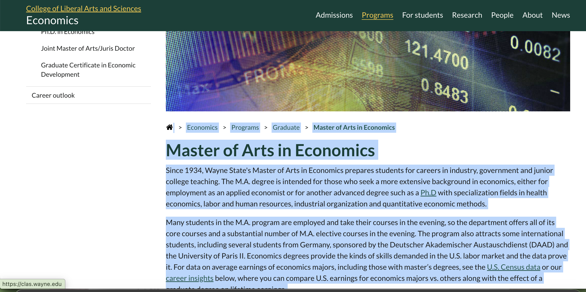
This is the <main> section of the page. I have highlighted the portion that is considered the main navigation area to contrast it with the other parts of the page in the screenshot. It is appropriate to use <main> block element because this section is the main content of the page and has the most relevant information for the viewer.
Navigation Section
To the left of the <main> section of the page is the navigation section with links. The section is highlighted in blue in this screenshot. Using <nav> makes sense for this section because it is a navigation section that contains links to other relevant pages.
Page Footer
At the very bottom of the page is the footer. It is appropriate to use <footer> because this is the end of the page, the page's footer.
Heading Hierarchy
<h1>
This is a level 1 heading with the text "Master of Arts in Economics." This introduces the entire body text of the page, so it is the most important heading as everything else that follows is related. Therefore, it should be an <h1> heading.
<h2>
The highlighted portion with text "About the Program" is a level 2 heading. It's appropraite to use a <h2> heading because this heading introduces a subsection with text more about the program, which falls into the category of Masters in Economics.
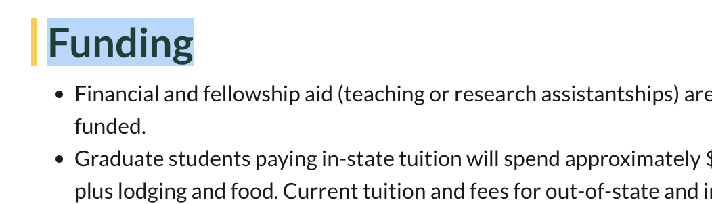
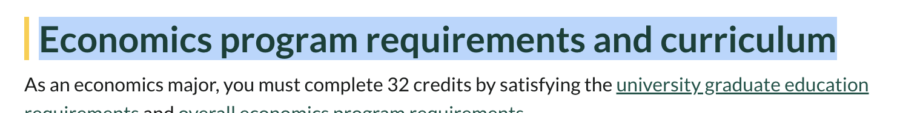
The above are other examples of level 2 headings on the page. These are subsections that fall under the category of "Master of Arts in Economics" like "About the Program" does.
<h3>
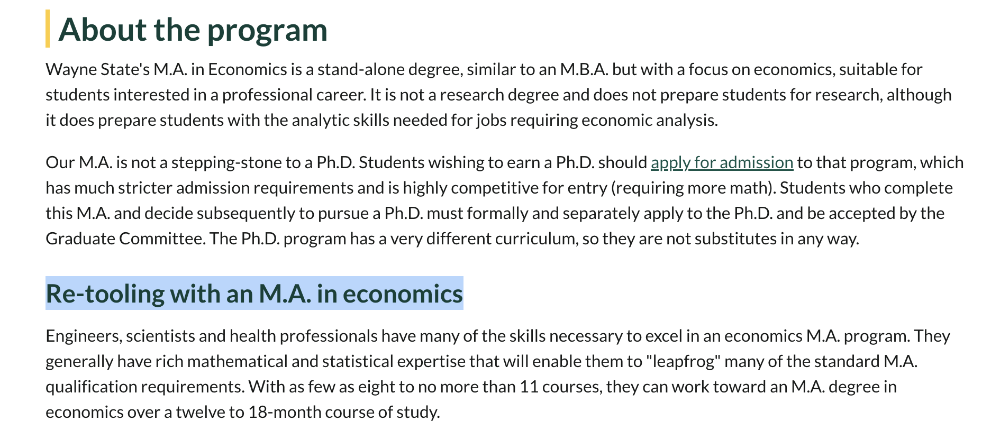
The highlighted portion with text "Re-tooling with an M.A. in economics" is a level 3 heading. It's appropriate to use <h3> because it is a small sub-section that is additional information for people looking at the "About the Program" section.
Lists
Unodered List i.e. <ul>
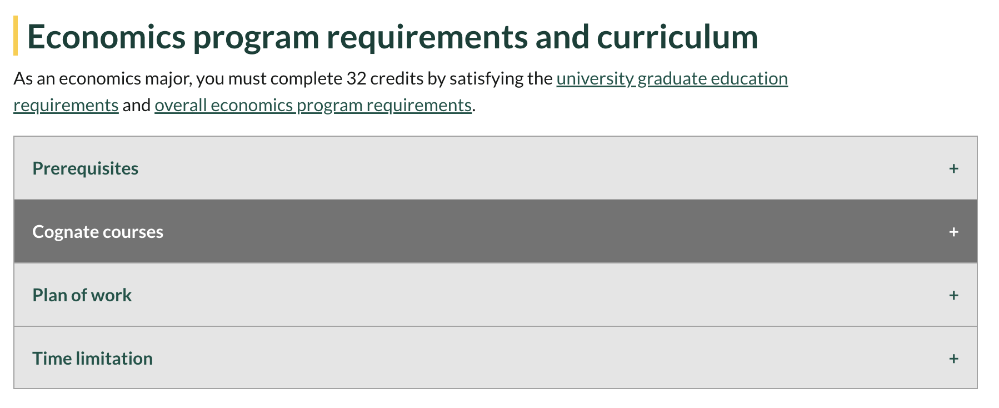
This is an unordered list consisting of list items <li> "Prerequistes, Cognate courses, Plan of work, and Time limitation". The list items are links that link to drop-downs with more information. It is unordered because there does need to be a sequence to the items in the list. This could also be a list that is coded as a <dl> because it is a list with descriptions.
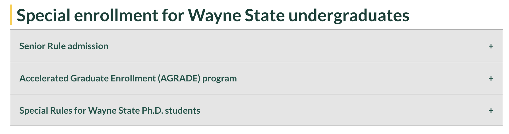
This is an unordered list consisting of list items <li> "Senior rule admission, Accelerated graduate enrollment (AGRADE) program, Special Rules for Wayne State Ph.D students." Again, this is similar to the previous list.The list items are links that link to drop-downs with more information. It is unordered because there does need to be a sequence to the items in the list. This could also be a list that is coded as a <dl> because it is a list with descriptions.
Link Analysis
Internal Links
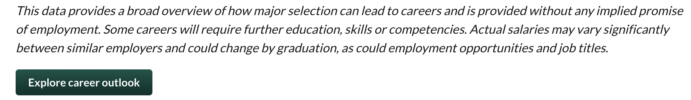
This green button links to an internal Wayne State page about the career outlook of Economics students.
External Links
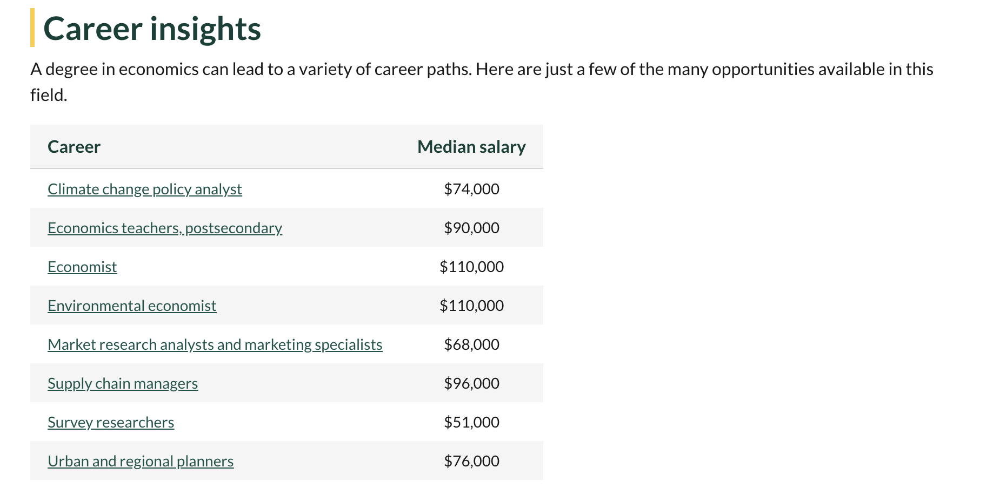
A table with links that open new tabs to onetonline.org with summaries of the job titles.
Internal and External Links
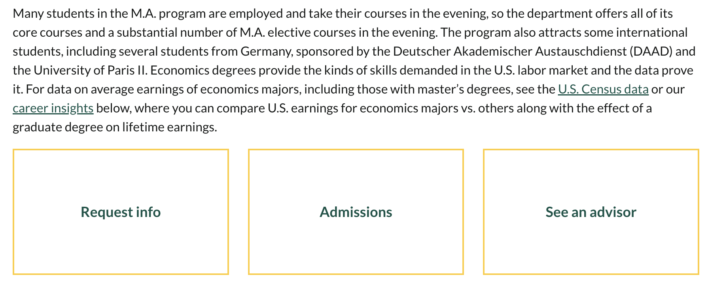
This screenshot shows a mix of internal and external links. The in-text link for the U.S. Census data does not open a new tab and goes to an external census site. The career insights link does not open a new tab either, but links to the below Career Insights section that was discussed above in the internal links section. The three text boxes bordered in gold are all links that link to internal Wayne State pages (Request Info, Admissions, and See an advisor).
Summary of links presented on the page
There is a mix of internal and external links, and there is no differentiation in style between whether a link is internal or external, other than context clues like with the U.S. Census link. All links do clearly indicate via their text where they are going, which is important to accessibility. The external links all open new tabs when clicked, whereas the internal links all redirect the page to the new link.
Tables
This table presents information about career paths for economic students and an estimated salary. It does use <th> to label the two columns ("Career" and "Median salary"). Given the simple two column format and the basic information, this is an appropriate table structure for the data presented.
Accessibility Review
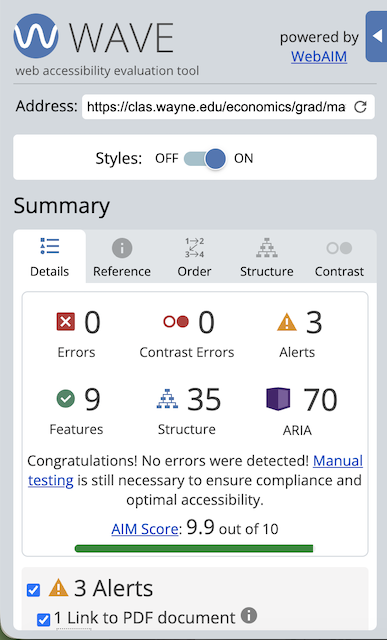
There are 0 errors and 3 alerts. Yes, there is <alt> text for the image(s). The first alert is that there is a link to a PDF document present. WAVE states that this could present an issue because PDFs are not always accessible. PDF documents often need a separate plug-in or application, which can cause navigation issues. WAVE suggests to ensure the PDF is natively accessible. The other issue is that there is a <noscript> element present. WAVE says this is an issue because that means JavaScript is disabled and almost all users have JavaScript enabled, especially those using screenreaders, so having <noscript> enabled would cause accessibility issues.
HTML Validation
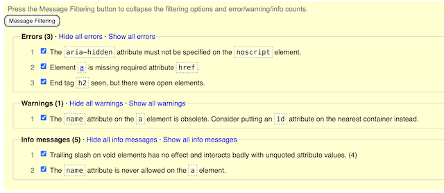
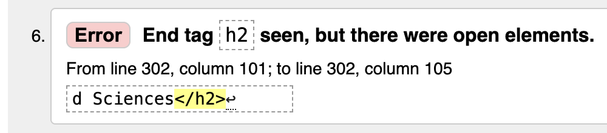
There are 3 errors, 2 warnings, and 5 info messages. One error states: "End tag <h2> seen, but there were open elements."" This means that there is a closing <h2> tag, but another tag before that one needed to be closed first. From reviewing the code, it looks like a <h3> tag needed to be closed. Since this is just one line of code, the site owner could easily go in and update this line of code to close the <h3> tag before closing the <h2> tag.
Summary
The page is overall well-structured. It flows in a logical way for someone looking for information about the Wayne State Economics Masters Program. There is a variety of clearly labeled links and other information. From the WAVE assessment, the disablement of JavaScript seems pretty impactful in terms of accessibility, and it would be nice to see that evaluated and changed. With some of the lists on the page, it is a bit clunky to have to click to open the down bar areas to read more, although I assume that is trying to save space and make the webpage not as lengthy as it would be if those were not compacted as they are. Overall, it is generally accessible and well-structured page.